Eve — the female template (frozen)
Frozen as the female template (r065 to r085, 14 October)
Eve is frozen: every female character and all female gear are built on this body. The day closed the open items from 13 October and then finished her under review by separate critic agents (target 8 out of 10, at most three passes each). The shoulder-blade and elbow marks had been hidden or cut out of frame; all the painted marks now taper and sit where skin shows. A new pose shape removes a lump behind the heel when the foot points. The hand was rebuilt: the step at the wrist is gone, the fingers are fuller at the base and taper, the palm has a pad and the knuckles show, and a new fist clip closes properly through Unity's Humanoid retarget. On the way it turned out that no thumb movement in any of her clips had ever played (the thumb bones were in the wrong rotation mode); that is fixed, and her idle and walk now have a relaxed hand. Her head has its own copy of the face shader: the shade line follows the light round the face, bulges round a lit cheek under the far eye, adds a small shadow at the nose tip and stops above the brows, and the neck now follows the same line. Final critic scores: hand 8, template 8, face shading 8, marks 8, neck 8.

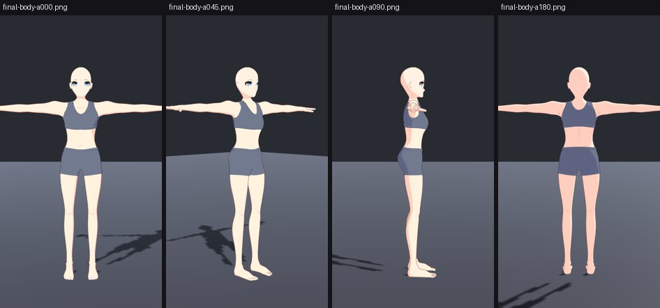

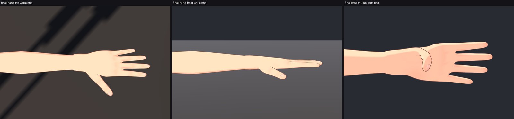

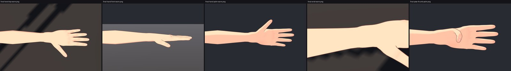

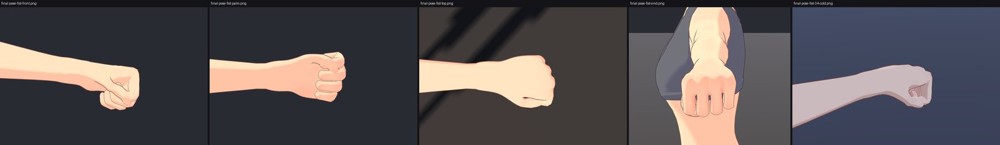

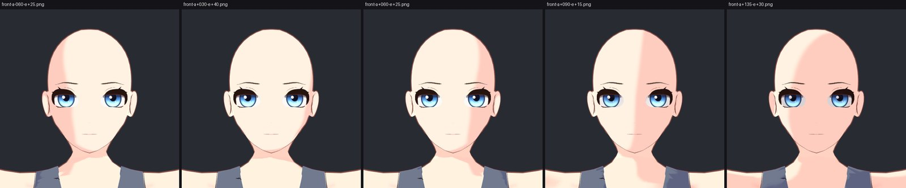

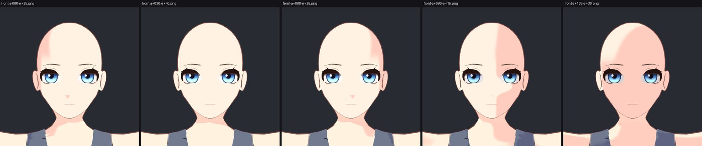

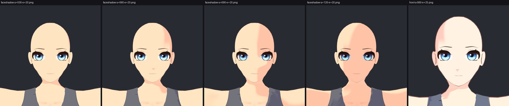

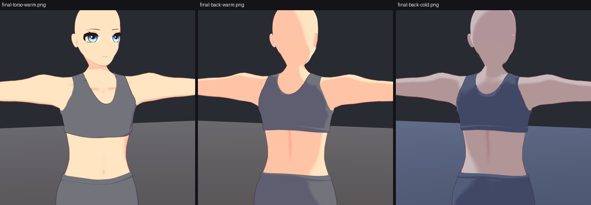

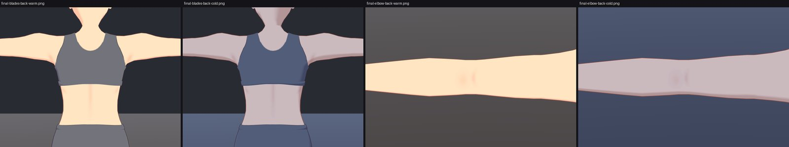

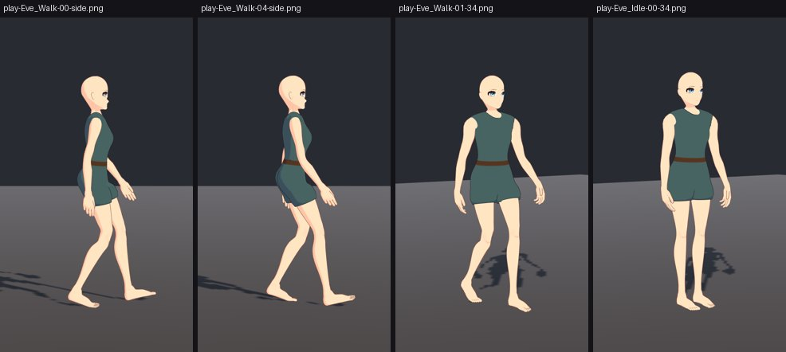
- Frozen at your word; changing her now means a new revision.
- Recorded with the freeze: sleeves need their own underarm handling; heavy armour is untested until such gear exists.
- Still to come: an authored face shadow map.
EarlierElastic bands, a planted walk, real playback and pose shapes (r034 to r064)
The five faults listed after the first pass were fixed or reduced. The undergarments got elastic bands at the waist, leg hems and under the bust, which evened out the hems, and the outfit got a belt. The walk now plants the feet and has a heel-to-toe roll, hip sway and twist. A built Windows player plays the idle and walk with real skinning (the first playback showed the feet sinking, fixed by baking root motion into the pose). Fourteen bend shapes are driven at run time, the shoulder and thumb have pose shapes, landmarks are painted on the body, and the hands and neck got new UVs.


- Newest files: r063, r064 and the derivative d013. All Unity imports passed, and in the player the toe joint stays 26 to 33 mm above the floor through the walk.
- Still short: the shoulder-blade and elbow marks do not show, the thumb fold remains, and the arms-forward capture did not reach the intended pose. Author's inspection only; Eve is not declared frozen.
EarlierUndergarments, outfit, motions and a derivative (r032, r033, d002)
A sports-style top and boy shorts replace the old modesty meshes. Over them, a sleeveless shift. Eve also got a valid Humanoid avatar, placed UVs, an idle and a walk clip, and a taller derivative (1.656 m) that passes the same checks.


- At the time of this first pass the leg hems were slightly uneven and no player build had been run; both were dealt with in the later passes below.
EarlierFeet with five modelled toes
The rounded toe mass was cut off each foot and replaced by five separate toes, so a barefoot adventurer is possible. Nails and creases were then painted on the body texture.


EarlierHead, start to now, and the first Unity captures (r021)
Expression strength, face shading and line, the neck and ears, and body normals were merged as r021, the first revision seen under the game shader.


EarlierEye shape and eyeliner (r003 to r013)
A new lid outline with a heavier upper lash band, a lower line and a crease. Four critic runs scored 6 to 6.5 against a target of 8; the user then reviewed r012 as good, and r013 fixed the hairline, the cheek marks and the brow controls.


EarlierFace shape and artwork (r001, r002)
Eyes moved 3.1 mm toward the midline, the lower face narrowed toward the chin, the cheekbone brought forward so the far eye sits inside the outline at three-quarter, and the head normals rebuilt to remove a box-shaped edge round the face.

Serelle — the priest companion
The first character built from Eve, after your reference picture: long golden-blonde waves to the waist with a full fringe, a half-up braid, a hairband, a ribbon and a gold star; blue eyes; a white high-collared robe with wide bell sleeves under an open vestment with gold trim and gold stars, a belt and a gold chain with a pendant. At your word everything blue in the picture is red (her eyes stay blue). Eve herself is untouched: Serelle is a copy with her own hair, face colours and clothes, 15 parts in all. You named her Serelle; she will later become a preset in the character creator.

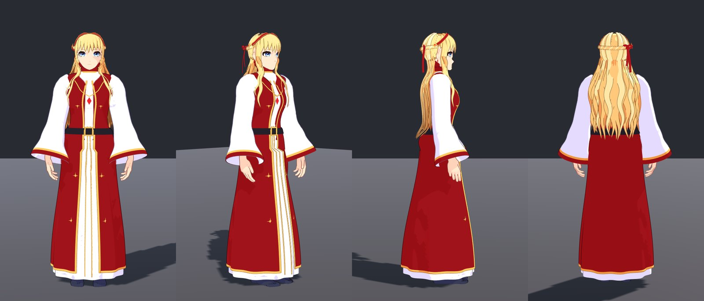

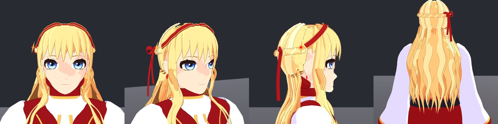
In the game (14 October)
Whenever your companion is the Priest (today: when you register as a Warrior), Serelle takes the place of the companion's placeholder body, in town, in the guild, in training and in the dungeon, where she is the real companion who fights and heals. She stands or walks as the party moves, and her skirt swings with her legs. Nothing else about the companion changed. The main game build was rebuilt with her and passes the ability checks (as a Warrior with her beside you, and as a Priest, where she correctly does not appear) and the journey checks.

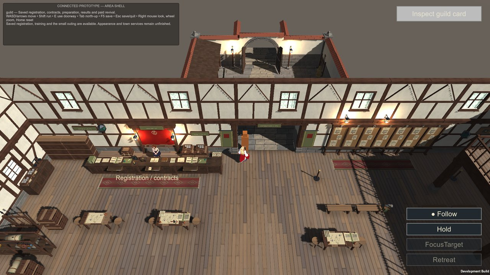

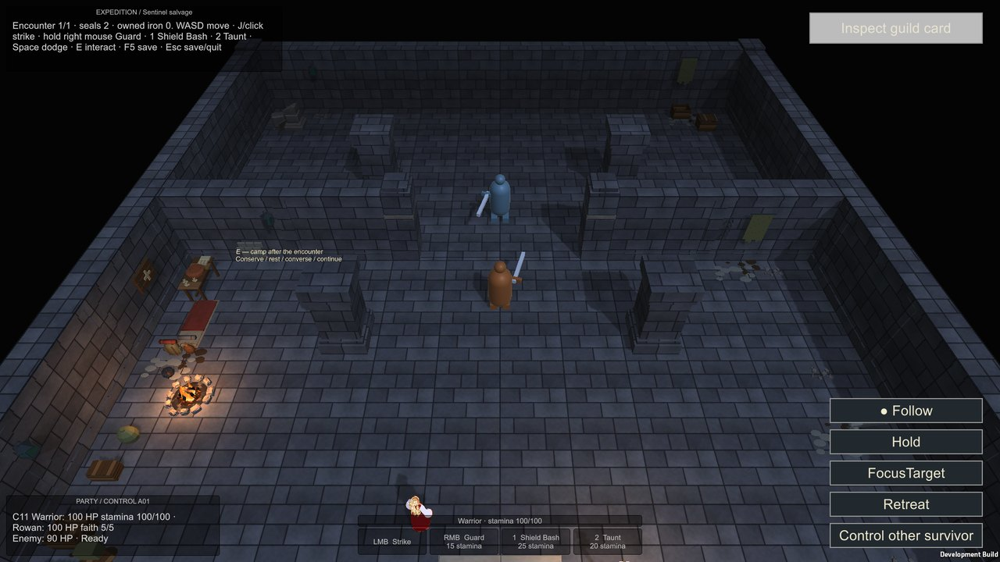

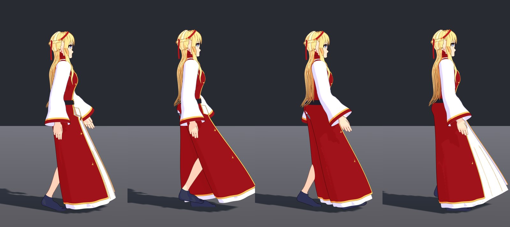

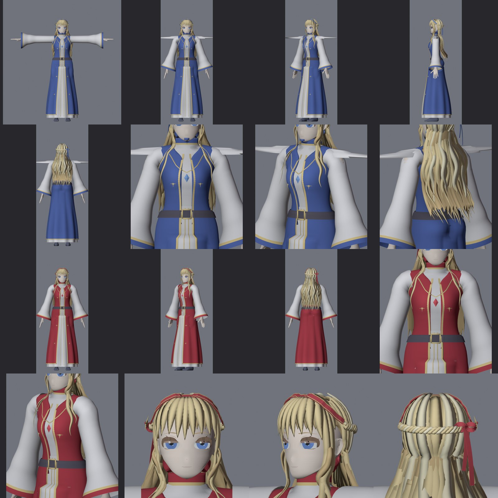
- Nobody has played her by hand yet.
- At full stride the back leg shows through the back of the skirt; she has no run, cast or fall animation yet (she walks faster to keep up and lies flat when she falls); her hair is a little orange under warm light. A refinement pass for these is under way.
Enosh — the male template
Built by scripts from a copy of Eve, and rebuilt three times on 13 October. The first build was too broad in the torso. After male reference sheets were supplied, the shoulders, chest, waist and upper arms were retuned to them (shoulders about 2.6 face widths across, waist 1.3). A refinement pass then added painted body lines, a finer chin and a larger eye. The latest pass (t004) added triangles to the neck and evened out its skin weights, so it no longer pleats when the head turns, and rebuilt the closed eye and the outer end of the lash. Now (t011): height 1.737 m against Eve's 1.593 m, 7.49 heads, the same 87 bones, 54,016 triangles against Eve's 52,304.
The Warrior's moves and effects (October 15 to 17)
The male adventurer now has his own animation for each Warrior ability, timed to the game: the strike (a forehand cut from high on his right down across to his left, with a short freeze on a landed blow), the shield bash, the taunt (two bangs of the pommel on the rim, on the shout), the guard with its block and break, a dodge in each of four directions, the stagger, and six talent moves (parry, bulwark, cleaving blow, long thrust, whirlwind, rallying cry). The Warrior effects came off hold: the steel arc now follows his blade tip, block sparks come from his shield, and the bash and taunt marks sit at his shield. The footage below is from the game itself, at the game camera's angle (left) and side on (right).

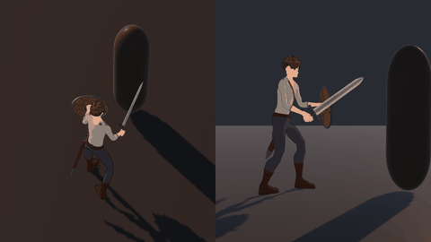

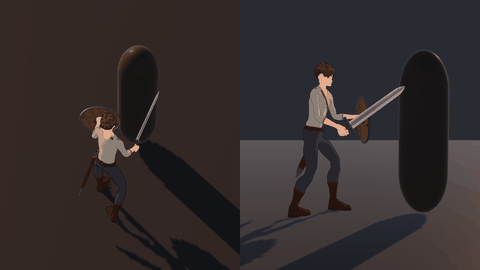

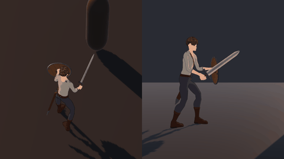

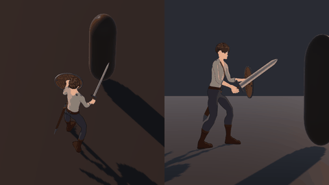


- Not approved. Each move had three reviews against a mark of 8; none reached it (best: the stagger 7.7, the guard 7.1, the bash and taunt 7). The effects had four reviews and reached 7.1 overall; the strike arc reached 8. The list of open faults and choices is waiting for you.
- In the test build of the game he passed the Warrior, Priest and journey checks; the main game gets him at its next rebuild.
The adventurer as the Warrior, with sword and shield (a040, 15 October)
The male adventurer now carries a broad-bladed sword with a wheel pommel, and a round wooden shield with iron bands and the Covenant's flame painted above the boss. The sword hangs in a scabbard on his left hip and the shield on a sling across his back. He has 15 combat moves of his own: a fighting stance, a walk and run with weapons drawn, drawing and sheathing, the strike, raising, holding, blocking and losing the guard, the shield bash, the taunt (two bangs of the pommel on the rim), the dodge, the stagger and the death. When you register as a Warrior he is the player: sheathed in town and the guild, drawn in the dungeon and whenever he fights. The class and ability tests pass with him in it.

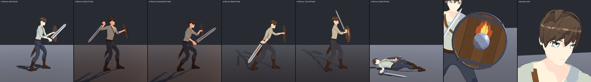

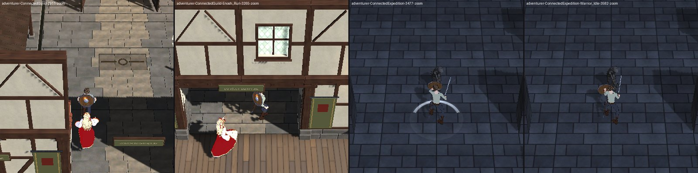
- Not approved. Every step had three reviews against a mark of 8; none reached it (the in-game look scored 6.2 to 6.6, the moves 5 to 6). The list of open faults and choices is waiting for you.
- The moves are first blocking passes: their polish and the warrior's effects come next.
- The main game build does not have him yet; it gets him at its next rebuild.
Run cycle, live playback check and the adventurer on the template (t012, a028, 14 October)
A small Windows player now plays his clips with real skinning and his runtime scripts live. The joint shapes react while he walks, and the face shadow follows a moving light. It found his feet sinking about 17 mm in real playback, because Unity dropped the hips' up-and-down motion; the same fix Eve has was ported, and the toes now stay where the animation puts them. He has a run: a jog at 2.5 m/s, landing on the forefoot with both feet off the ground for a third of the cycle, a high heel kick, a forward lean and the elbows bent near a right angle. The male adventurer was rebuilt on the accepted template by his own scripts, with nothing changed: his hair and collar fit the new body, and every garment bends with the joint shapes.

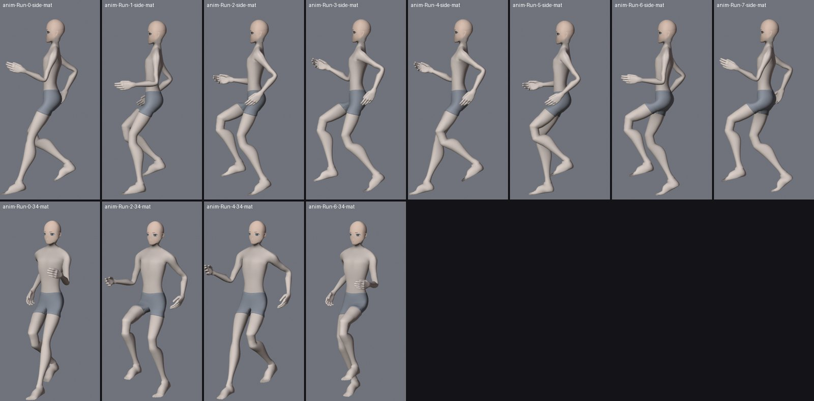

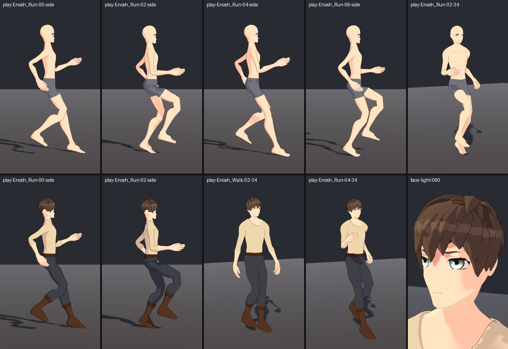

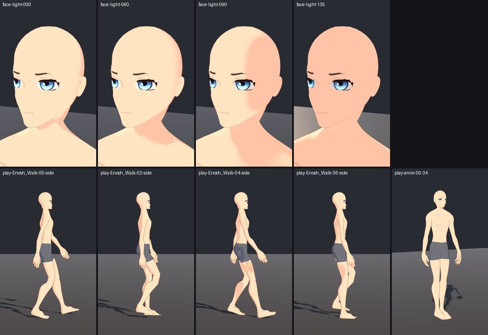

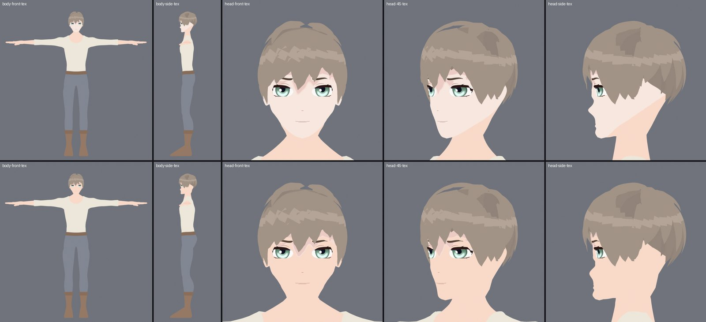
- The run is a jog; a sprint would be its own clip. The game does not use Enosh yet, so the clips have played in the review player only.
- Under a strong side light a pinkish patch shows on the adventurer's cheek where his hair shadow meets the face shadow.
Accepted template, with his own idle and walk (t005 to t011, 14 October)
Seven more passes on 14 October. The face shades as one shape under side light (an Enosh-only face shadow that follows the light round the head). Hands and feet are male, and elbows, wrists and ankles have painted lines. Seen from the side he is deeper through the chest, waist and neck, the neck is shorter and the shoulder line flatter, the head a little smaller, the limbs fuller, the eyes a little narrower and the profile softer. Three critic reviews scored the template 5.5, 6.0 and 6.5 before a final refinement. Eve's joint correctives were then ported to him: shapes that keep the shoulder, thumb, ankle and the skin under the jaw clean in those poses, driven at run time in Unity. The template was accepted with these. Last, Eve's planted heel-to-toe walk was retuned for a man (longer stride, wider track, less hip sway, stronger shoulder counter-turn, bigger arm swing), and he got a wider, slower-breathing idle.

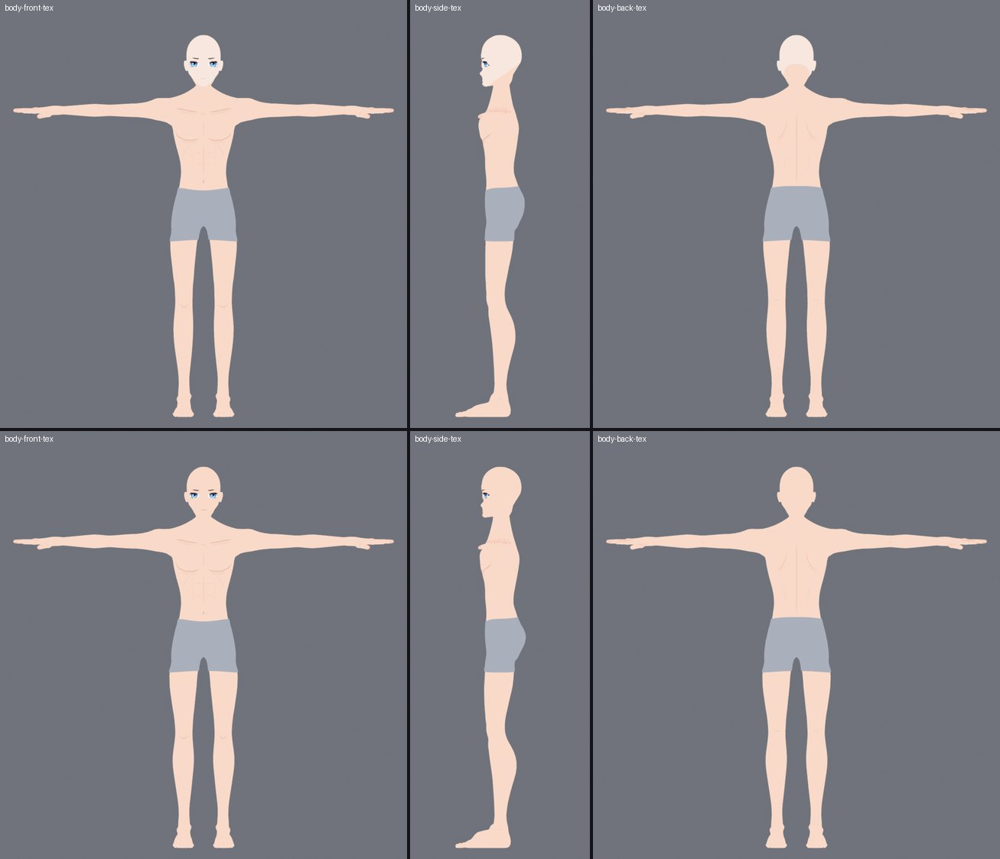

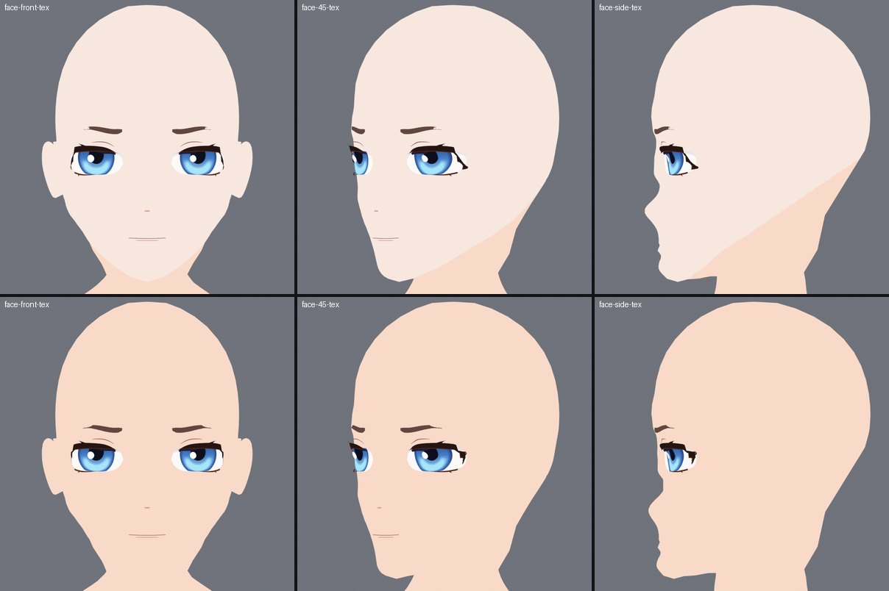

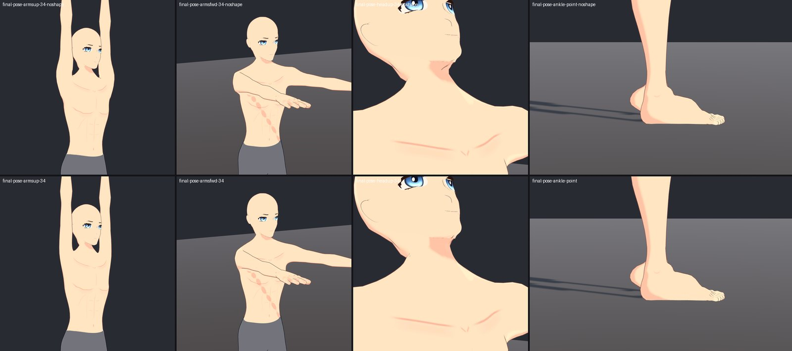

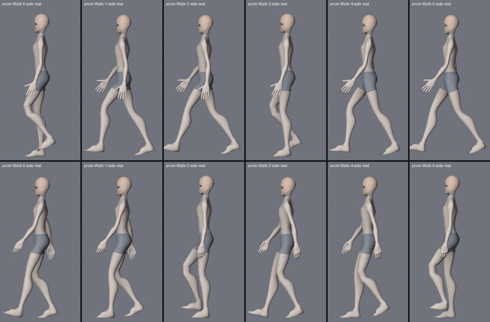

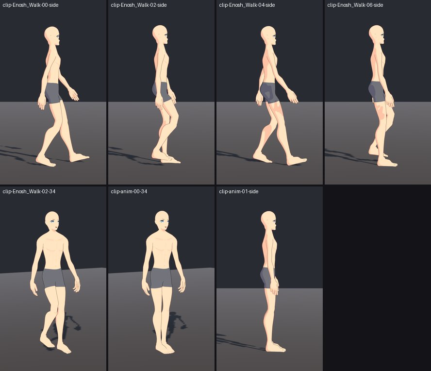
- Accepted by you as the male template; the adventurer is rebuilt on it in his own thread.
- Still to see: the walk in motion in the game; no run or turn clips yet.
The adventurer's hairline (a025, 14 October)
The old fringe ended in an even row of spikes with bare forehead in hard gaps between them, and the scalp cap showed above the ears. Following the reference sheets, the fringe is now six large locks of different lengths from a parting a little off centre. They cross the brows and one falls between the eyes, over a shorter, darker inner layer. Side locks come down past the temples to the cheekbone, and a soft two-tone hair shadow, generated from the locks, lies on the forehead under them. The irises stay clear in every view and with the brow and blink controls. Rebuilt on template t005.

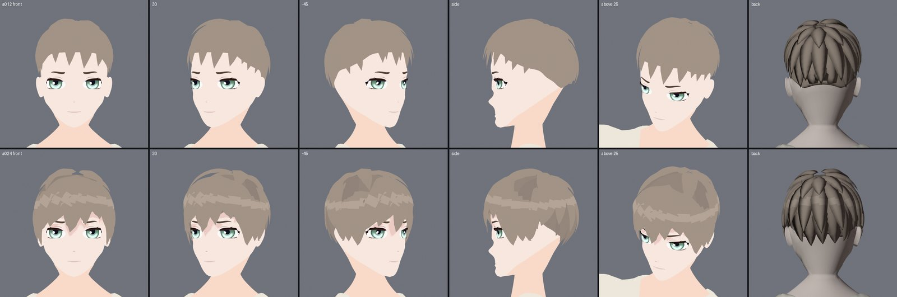

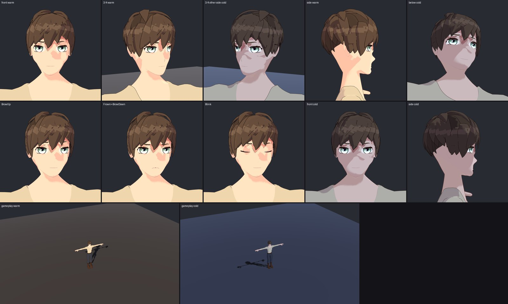
- Not approved; the scores are the author's own (fringe 8, sides 7.5, shadow 7, colour 7; 6.5 for the head in Unity).
- Still short: in the game shader the longer hair throws blocky shadows across the face and the forehead shadow gets a hatched edge; the light sheen ring zig-zags; a thin pale rim shows round the brows; the lock tips are still sharp.


The male adventurer
The first character made on Enosh, a road-worn traveller: short layered ash-brown hair, grey-green eyes, cream shirt with a round collar, slate trousers, brown belt and cuffed boots. He is rebuilt on each new template by the same three scripts; the current one is a012. He passes his Unity Humanoid import and has a prefab with ten switchable parts.

- Not approved yet; every pass is waiting for review, and the scores given along the way are the author's own.
- Still short: a ragged shade edge under the jaw, a hard shadow across the cheek in cold light, body lines that are paint and not form, a fringe that is an even row of spikes, boots that are plain wedges, a shirt with no folds.
Defeated characters fall as ragdolls (15 October)
When a character's health reaches zero, the body now goes limp and falls under physics instead of holding a fixed death pose. It keeps the motion it had, takes a push away from whoever struck it, and lies still once it comes to rest. A revive hands it back to its animation in a third of a second. Knees and elbows bend only the natural way. Living characters walk through bodies rather than being blocked, and a body moves with its character if the game carries it away (for example on a retreat). It only changes what you see: combat, saves and everything else are unchanged.
It fits itself to any character built on Eve or Enosh, with no setup per character. In the game today that means Serelle; the male adventurer gets it when he joins. The main game build has not been rebuilt yet, so it appears there at the next rebuild.

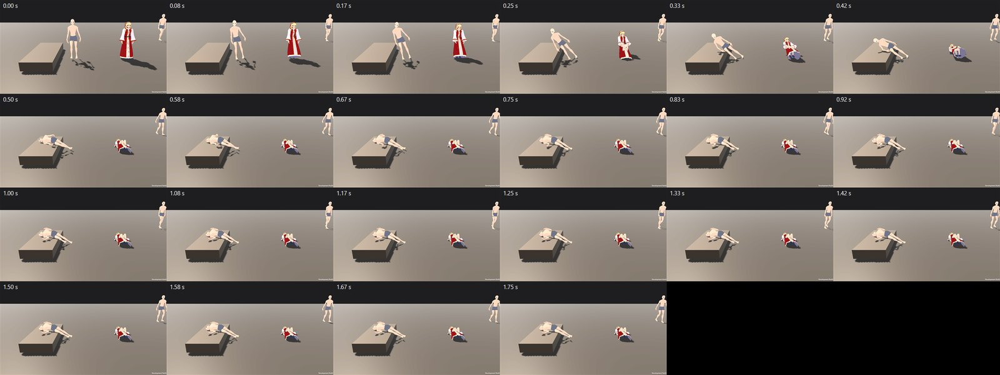

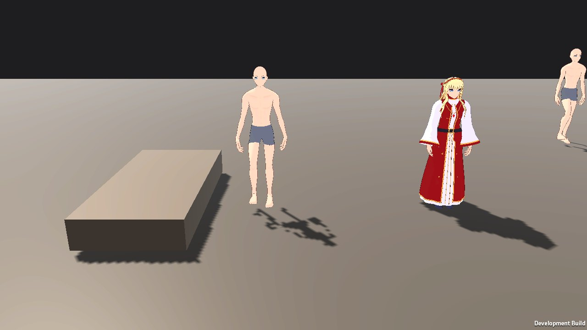

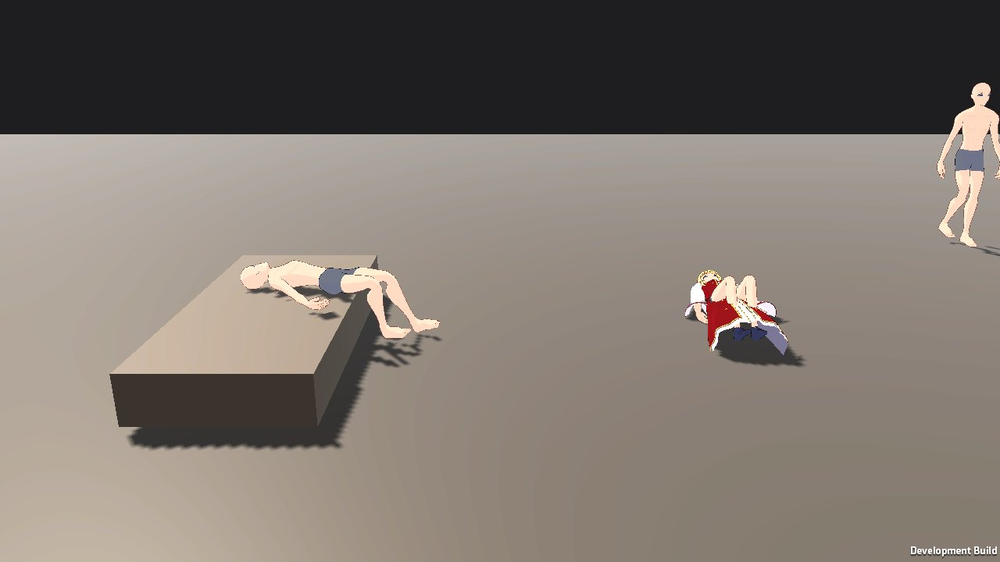

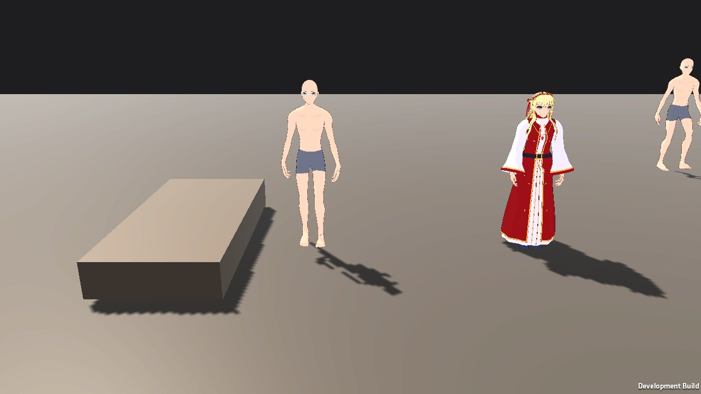

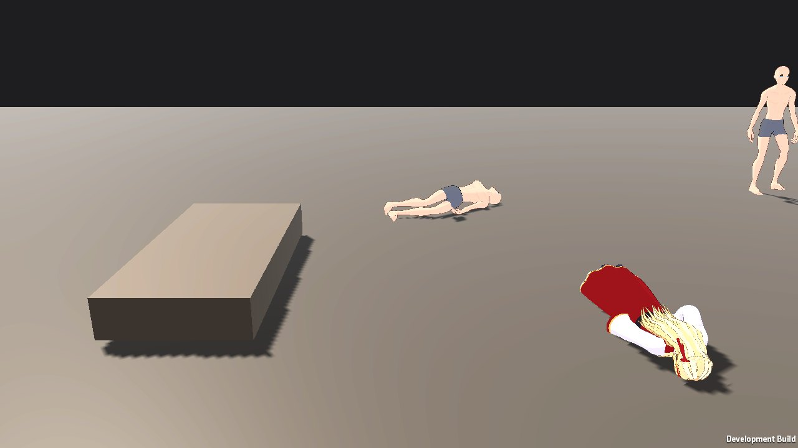
- Proof: 49 of 49 checks in a Windows build, no errors. Two falls each, a revive in between, and a body moved while down. It took six runs; the first five found the knees and elbows bending the wrong way on a second fall, which is now fixed.
- Not done yet: no get-up animation (a revive blends back in a third of a second), every blow pushes equally hard, and hair, skirts and fingers hold their pose rather than swinging.